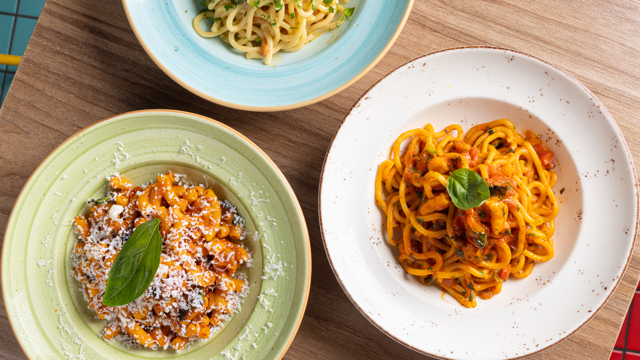

Cucina italiana, servita come a casa.
Piatti di stagione, pasta fatta a mano e una cantina scelta con cura. Un tavolo apparecchiato per un pranzo veloce o per una serata lunga.

Ingredienti scelti
Lavoriamo con piccoli produttori e cambiamo il menù con le stagioni.
Fatto in casa
Pasta tirata ogni mattina, pane e dolci preparati nella nostra cucina.
Per ogni occasione
Sala per le cene a due, tavoli per gruppi e menù per le feste di famiglia.

I piatti da non perdere
- Tagliatelle al ragù bianco14
- Risotto allo zafferano e midollo16
- Tagliata di manzo, rucola e grana22
- Tiramisù della casa7
Scopri il nostro menù


Hai già scelto la serata?
Lasciaci i tuoi dati: ti confermiamo la disponibilità entro poche ore.
Richiedi una prenotazione